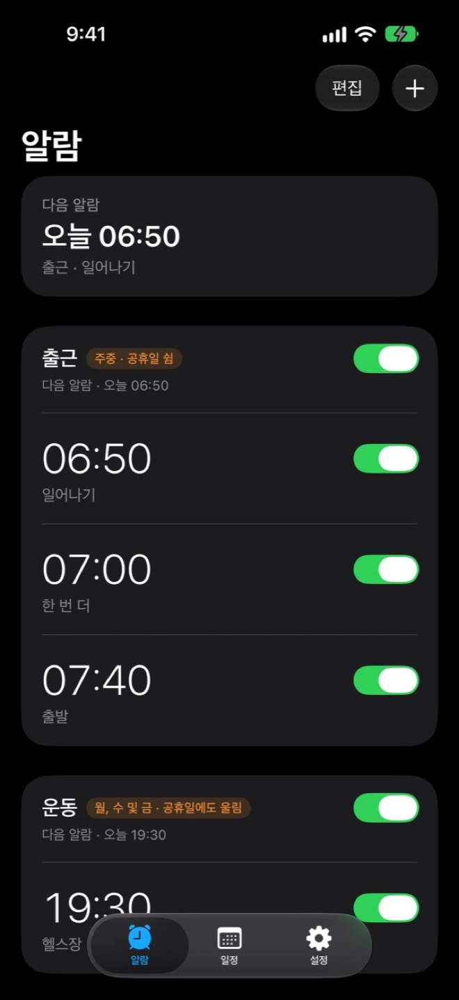
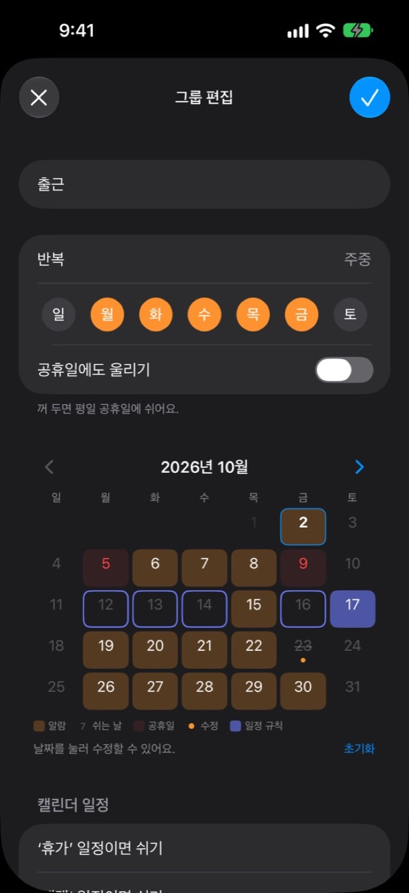
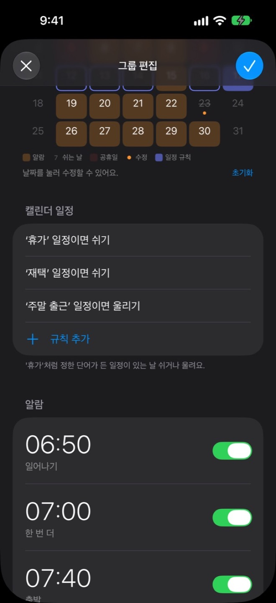
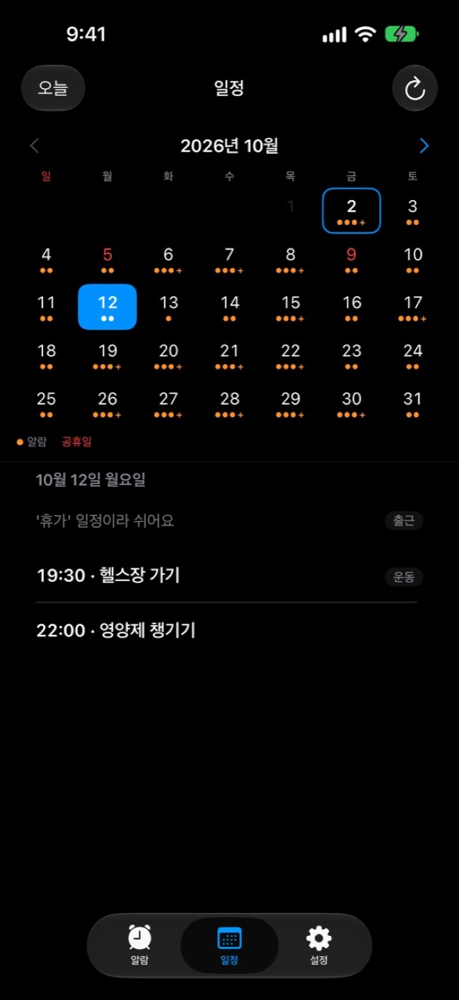
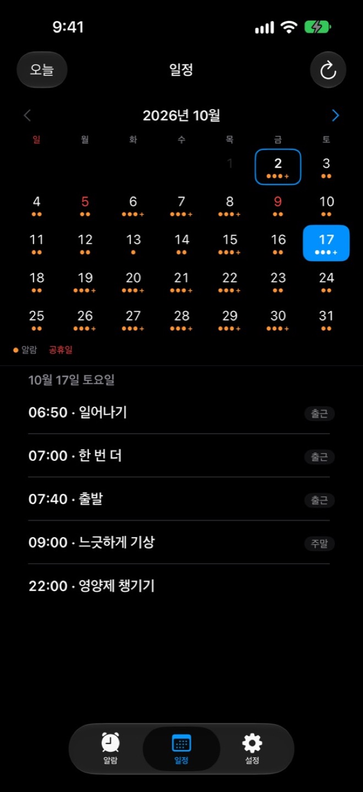
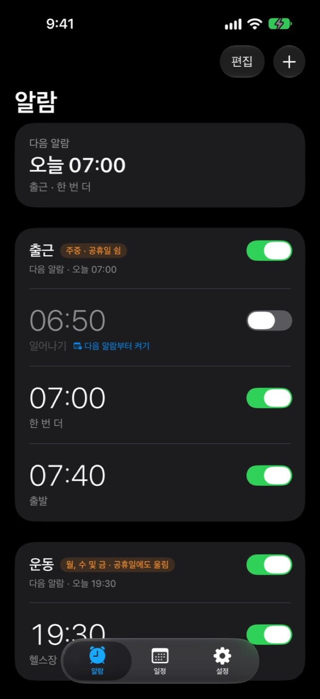

내 일정에 맞춰 알람이
알아서 켜지고 꺼져요
- 평일엔 요일대로 울리고
- 공휴일엔 알아서 쉬고
- '휴가' 일정이 있으면 쉬고
- '주말 출근' 일정이면 울려요
출근 · 2026년 10월
캘린더 규칙
날짜를 누르거나 규칙을 켜 보세요.
새 공휴일은 앱 업데이트 없이 자동으로 받아요.
이렇게 써요






01
알람은 그룹으로
출근, 운동처럼 함께 울릴 알람을 묶어 두면
스위치 하나로 모두 켜고 꺼요.
02
요일과 날짜는 달력에서
그룹마다 반복 요일과 공휴일을 정하고,
연차나 대체 출근일은 날짜를 눌러 바꿔요.
03
캘린더 규칙은 단어 하나로
'휴가'처럼 원하는 단어를 정해 두면,
그 일정이 있는 날 알아서 쉬거나 울려요.
04
휴가엔 알아서 쉬어요
캘린더에 '휴가'가 있는 날은 출근 알람이 쉬고,
일정 탭에서 왜 쉬는지 바로 보여요.
05
주말 출근엔 울려요
토요일이어도 '주말 출근' 일정이 있으면
평소처럼 출근 알람이 울려요.
06
오늘만 쉬어 가요
오늘 알람만 끄고 싶을 땐
'다음 알람부터 켜기'를 누르면 내일부터 다시 울려요.
전날 밤, 내일을 알려 줘요
정해 둔 시각에 내일 울릴 알람과
쉬는 이유를 알림으로 보내요.
21:00
10월 8일 목요일
내일 알람지금
내일 06:50부터 알람 3개가 울려요.